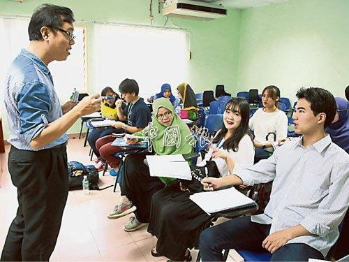

每日一篇——教学案例/ 马来西亚对外汉语教师推广趣味教学 国际生争相选修
来源：中国侨网
中国侨网5月16日电 据马来西亚《中国报》报道，近年的“汉语热”让许多非华人士到中国学汉语，但也有日本、韩国、泰国等地学生，前往马来西亚当国际交换学生时选修汉语。
通过在马来亚大学教导对外汉语的刘树佳硕士，就可看到日韩泰和大马非华学生一起学汉语时闹的笑话以及他们对汉语的热爱。
“您好刘老师，最近我们练习在家里说中文”、“请问我什么时候去他见面后上课”，刘树佳表示这些都是交换生们常犯的错误。
“他们说中文时句子倒转，我会纠正他们，帮助他们学习汉语。不只是日韩学生的问题，西方人学汉语也有这样问题，这应该是他们受到自己的母语影响。”
在最近一批的日韩泰和大马学生中，主宾语对调和中文四个声调依然是学生学汉语最常发生的问题。为此，刘树佳想了许多方法让学生们更好地学习汉语。
他在手机社交媒体上开了一个群组，让学生们可以尝试用中文交流，虽然学生们使用中文状况百出，但学习热情高昂。
非华裔人士学中文常发生主宾语次序倒转的情况，但刘树佳表示，只要用英语解释之后，基本上这些大学生们就会有所进步。
“我在课堂上也会给他们多多练习，只要多说多念就可慢慢适应，如果只是用记方程式的方式学习，就不可能做到。”
他指出，日韩学生在语序方面会出现问题，这是由于其母语的影响，目前无法即刻纠正，只有通过多听多说，才能改善这些问题。

来自日韩泰的国际交换生和大马非华学生一起向刘树佳学习汉语。
（马来西亚《中国报》/杨淦翔 摄）
【趣味教学】
刘树佳教导对外汉语已经10年，教过不少学习汉语的本地与外国学生，这一次在马大教育系的国际交换生，需在14周内完成第一阶段的学习，他就用不同且有趣的方式让他们尽快掌握基本汉语。
这些方法包括用儿歌学习中文、寻找更多网上影片给学生看听学、角色扮演对话学习、互相录影学习等方式。
“他们学习汉语基础课以会话为主，如果一开始就教较难的汉字，或会有人吓到打退堂鼓。先从最基本的声韵母或声调着手。文字方面先教笔划或笔顺，然后才写简单汉字。”
他认为轻松教学最重要，老师要融入学生圈子中，因为老师也是他们要说汉语的对像，让学生觉得与老师没有隔阂才有利于学习汉语。
【为什么选修汉语】
刘树佳指导的对外汉语学生，不管是韩日泰或大马的巫印裔学生，皆相信汉语是继英文之后重要的国际语言，将来会有助于自身工作，同时对汉语兴趣盎然。
【生意上需用到】
田边谅士(日本人)
“选择学中文，因未来中文会和英文一样流行，需要在生意上用到中文。”
田边谅士表示，由于日本也有用中文字，因此学习起来不算太困难，而且现在的日本人懂英文和中文，在职场上是一种优势。
“老师教我们用拼音学中文，中文有四声，学习发音有难度，看和写不难。”
他来到大马学中文时，遇到的困扰和其他日韩学生一样，许多华人一见他就说中文，开始时他哑口以对，现在则可以用些许简单中文应对。
【或到中国工作】
具本宰(韩国人)
在韩国大学修读能源工程的具本宰，聚焦中国在能源工程的发展潜能，期待掌握中文后，有机会到中国工作时可以派上用场。
因韩国的名字使用中文名，他不担心汉字书写方面；发音也不太有问题，而是在中文语法方面，主宾语前后倒置的情况是他需要克服的。
【曾在日本学习】
加藤启太(日本人)
年仅21岁的加藤启太，已经到过亚洲一些国家，这是他第二次来马来西亚。
“我在日本已学习一些中文，在这里学习则有朋友一起练习。我相信在日本也会用到中文，因此需要学习中文。”
他与一般日本学生一样，学习中文的主要问题就是发音，他需要更常向老师和懂中文的朋友交流，以掌握更准确的发音。
【找工作占优势】
任芽妍(韩国人)
任芽妍来自韩国第五大城市大田广域市，在大学修读英文，但她认为汉语越来越重要，为了她自己的未来，她需要修读中文。
她考虑在旅游方面发展，因此使用中文的几率高，例如可能在机场工作，因此懂得中文将能为其工作加分。
她开始学中文以后，觉得中文的难度不亚于英文，甚至有过之而不及，“虽然如此，我没有后悔，还是要学中文。”
【有兴趣各种语言】
雅琪菈(大马巫裔)
在大学主修阿拉伯语的雅琪菈，学习中文的目的之一是想明白华人的沟通方式，同时许多公司都要聘请通晓中文的员工，懂多一种语言就有多一个优势。
此外，她对各种语言都有兴趣，除了学习中文，她也学习韩语、泰语、西班牙语等。
“我会用自己的方式记下中文发音，不懂的，就用谷歌翻译，然再传给老师检查，纠正一些语法上的问题。” (潘有文)